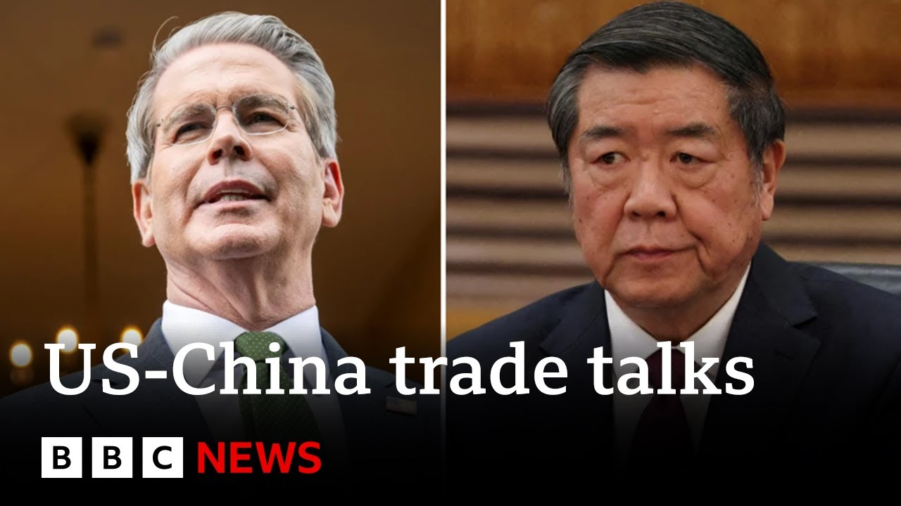

【美中就削减关税达成协议 | BBC新闻】
Summary: The US and China have agreed to temporarily reduce tariffs by 115% for 90 days amid ongoing negotiations, aiming to ease trade tensions and avoid economic decoupling.
摘要： 美中同意在谈判期间暂时将关税降低115%，为期90天，以缓解贸易紧张局势并避免经济脱钩。

⏱️ Estimated Reading Time: 8 min
The US and China have agreed to significantly decrease tariffs on goods being sold between the two economies after a successful round of talks which took place in Switzerland over the weekend.
美中在周末于瑞士举行的一轮成功会谈后，同意大幅降低两国间商品关税。
Well, following several rounds of tariffs issued by the White House, levies on Chinese imports into the US reached 245% while retaliation from Beijing took their tariff rate on imports from America up to 125%.
此前，白宫实施多轮关税后，美国对华进口商品的税率达到245%，而北京的反制措施将对美进口商品的税率提高至125%。
Well, in today's breakthrough, both sides agreed to lower levies by 115% for a 90-day period as negotiations continue on.
在今天的突破性进展中，双方同意在谈判期间将关税降低115%，为期90天。
US Treasury Secretary Scott Bessant said both sides saw the need for trade between the two powers to continue.
美国财政部长斯科特·贝森特表示，双方都认为两大经济体之间的贸易需要继续。
The consensus from both delegations this weekend is neither side wants a decoupling.
本周末双方代表团的共识是，任何一方都不希望脱钩。
And what had occurred with these very high tariffs, as Ambassador Greer said, was an equivalent of an embargo.
正如格里尔大使所说，这些高关税相当于禁运。
And neither side wants that.
双方都不希望如此。
We do want trade.
我们确实希望贸易。
We want more balanced trade and I think that both sides are committed to achieving that.
我们希望贸易更加平衡，我认为双方都致力于实现这一目标。
Uh we would like to see uh China open to more US goods.
我们希望中国对美国商品更加开放。
Uh we expect that as the negotiations proceed uh that there will also be possibility of purchase agreements to pull what is our largest bilateral trade deficit into balance.
我们预计，随着谈判的进行，可能会达成采购协议，以平衡我们最大的双边贸易逆差。
uh that has gotten uh out of balance and much of this has happened uh through neglect over the past four years as the previous administration uh did not engage on this issue.
这一逆差已经失衡，很大程度上是由于过去四年上一届政府未重视这一问题。
Scott Bessant there.
斯科特·贝森特如是说。
Well, let's get some analysis from our China correspondent Laura Bicker.
现在请我们的中国记者劳拉·比克进行分析。
Good to talk to you Laura.
很高兴与你交谈，劳拉。
Um for a long time, China seemed to be digging its heels in.
长期以来，中国似乎一直坚持己见。
Why do you think they ended up coming to the table in this way and agreeing to these uh cuts?
你认为他们为何最终以这种方式回到谈判桌并同意削减关税？
Well, you're right.
你说得对。
China has been defiant from the start.
中国从一开始就表现出反抗态度。
It has retaliated to every US move with levies of its own.
它对美国的每一步行动都采取了反制关税。
It has pledged not to back down.
它曾誓言不会让步。
And I've been traveling across the country.
我一直在全国各地走访。
Um I've met with factory owners.
我见过工厂主。
Um I've met with factory workers.
我见过工厂工人。
I've met with traders.
我见过贸易商。
Many of them agreed with that stance and said, you know, defiantly that they too uh would fight until the end.
他们中许多人支持这一立场，并 defiantly 表示他们也会战斗到底。
However, behind the scenes and behind the rhetoric, it seems that officials are growing increasingly concerned about the impact these tariffs might have on the Chinese economy, an economy that's already struggling to deal with the likes of a property crisis and very high youth unemployment.
然而，在幕后和言辞之外，官员们似乎越来越担心这些关税对中国经济的影响，中国经济已经在应对房地产危机和极高的青年失业率等问题上举步维艰。
So there was a concern that these tariffs would have an extra impact.
因此，人们担心这些关税会产生额外影响。
Officials in Beijing are also worried that as many countries rush to Washington to do their own trade deals, h they're worried about the threat that Donald Trump has issued that perhaps when they're doing these deals, they're going to be persuaded to cut China out of the global supply chain picture.
北京官员还担心，随着许多国家涌向华盛顿达成自己的贸易协议，他们担心唐纳德·特朗普发出的威胁，即这些国家可能会被说服将中国排除在全球供应链之外。
Now that's something that Beijing does not want.
这是北京不希望看到的。
So it does seem that when the US has initiated these talks as China claims it did h that China has responded.
因此，当美国如中国所称发起这些会谈时，中国确实作出了回应。
They talked for about seven hours on Saturday several hours on Sunday.
他们在周六谈了约七小时，周日又谈了几小时。
So the talks were as you heard there from the US Treasury Secretary robust and it does seem that they have managed to come to an agreement and that wasn't something that any of us were expecting.
正如美国财政部长所说，会谈是 robust 的，他们似乎确实达成了协议，这是我们所有人都未预料到的。
We'd heard from analysts that expectations for these talks were low.
我们从分析师那里听说，对这些会谈的期望很低。
So the fact that they have managed to come to an agreement is a surprise to many.
因此，他们能达成协议令许多人感到意外。
it will be suspended.
这些关税将被暂停。
These tariffs will be suspended for the next 90 days while more talks take place.
这些关税将在未来90天内暂停，同时进行更多会谈。
I think getting hold of a wider trade deal between these two countries, between these two uh leading economic countries might be more difficult.
我认为，在这两个领先经济体之间达成更广泛的贸易协议可能更为困难。
And Laura, you talk about the economics there, but there's a lot of politics involved in this too.
劳拉，你谈到了经济因素，但其中也涉及很多政治因素。
Where do you think this leaves the uh often fraught relationship between China and the US?
你认为这对美中之间常常紧张的关系意味着什么？
I think we'll have to see how the talks go between the next 90 days.
我认为我们必须看看未来90天的会谈进展如何。
I think I'm surprised by how positive the tone is in both statements, both from the United States end and the Chinese end.
我对美国和中国的声明中如此积极的语气感到惊讶。
It is a very very positive statement that's been issued by the Commerce Ministry.
中国商务部发布的声明非常非常积极。
However, there's a little just a wee sting in the tail at the end uh where the commerce ministry said it looks forward to working with the United States in these talks and uh basically looking at who has been in the wrong and they blame the United States for putting these levies on China.
然而，声明末尾略带刺意，商务部表示期待与美国在这些会谈中合作，但 basically 指出谁应对此负责，并将这些关税归咎于美国。
So, it's just a reminder of where Beijing stands.
因此，这提醒人们北京的立场。
Beijing believes that the United States is in the wrong for imposing these tariffs.
北京认为美国征收这些关税是错误的。
However, the US believes that China basically sells too much stuff to the United States.
然而，美国认为中国 basically 向美国出售了太多商品。
It wants a balance in trade.
它希望贸易平衡。
So finding that balance between Beijing and Washington will be the difficulty over these 90 days.
因此，在北京和华盛顿之间找到平衡将是这90天的难点。
But I have to say many of us have been surprised by the positive outcome just after two days of talks.
但我必须说，仅两天的会谈就取得积极成果令我们许多人感到意外。
Always great to have you on.
很高兴你能来。
Thank you very much.
非常感谢。
Our China correspondent Laura Bicker.
我们的中国记者劳拉·比克。